Interacciones de especies: presa-depredador
BIOL4558
Agosto 2021
Depredador


En el caso de la competencia, vimos que cada especie influía negativamente en la otra. En el caso de las interacciones presa-depredador, una de las dos especies se beneficia enormemente de la interacción, ¡y la otra pierde!
Casi todos los modelos de presa-depredador, incluso los más avanzados y complejos, comparten este marco común:
\(\Delta V = rV^* - f(V,P) \cdot P\)
y
\(\Delta P = f(V,P)*conversion.factor \cdot P - qP^*\)
y
$V $ es la abundancia total de presas (¡V para las víctimas!), Y
$P $ es la abundancia total de depredadores, y
$rV^* $ representa el crecimiento de la población de presas en ausencia de depredadores; por lo general, esta es una forma de los modelos estándar de crecimiento de la población de una sola especie que hemos considerado durante la mayor parte de este curso (posiblemente dependiente de la densidad) ,
$qP^* $ representa el crecimiento de la población de depredadores en ausencia de presas - ¡por lo general esto es simplemente una disminución exponencial!
Y
\(f(V,P)\) se conoce como la respuesta funcional, es decir, la tasa per cápita de consumo de presas, generalmente una función de la densidad (disponibilidad) de presas, pero a veces una función de ambas densidades de depredadores y presas.
Y
$ f(V,P)conversion.factor$ (alternativamente representado como \(g(V,P)\)) se conoce como la respuesta numérica, es decir, el aumento en el crecimiento de la población de depredadores per cápita debido al consumo de presas.
Hay muchos tipos diferentes de posibles curvas de respuesta funcional y numérica. ¡Empecemos de forma sencilla!
El modelo clásico presa-depredador
Veamos la depredación matemáticamente, comenzando con el modelo más simple posible …
Las victimas…
Consideraremos primero la presa o “víctimas”:
En ausencia de depredadores, supongamos que la población de víctimas crece de acuerdo con la ecuación básica de crecimiento exponencial:
\(\Delta V = rV\)
¡Asumiremos que la tasa intrínseca de crecimiento, $ r $, es positiva! En ausencia de depredadores, la población crece exponencialmente.
Si hay depredadores, el crecimiento de la población de las víctimas se ralentizará …
¿Qué expresión podría definir la velocidad a la que los depredadores consumen las presas?
En primer lugar, supongamos que los depredadores y las presas caminan al azar a través de su entorno común, chocando unos con otros al azar. Cada vez que el depredador choca con un objeto de presa, el depredador tiene alguna posibilidad de consumir ese objeto de presa.
Esto es análogo a las moléculas que se mueven al azar en una solución, provocando ocasionalmente reacciones cada vez que chocan con otras moléculas de la manera correcta.
En tales circunstancias, los depredadores NO interfieren entre sí y nunca se llenan. Cada depredador consume un número fijo de presas en un período de tiempo determinado, dependiendo solo de la disponibilidad de presas.
Considere el caso donde hay $ V $ presas y solo un depredador en un sistema hipotético presa-depredador.
P: Imagina que hay 100 presas y solo un depredador. Se consumen un total de 3 presas en un solo día. ¿Cuál es la tasa diaria de consumo de presas por depredador en este ejemplo ($ alpha $)?
En este caso, el depredador encuentra y consume con éxito el 3% (0.03) de las presas todos los días. Si hubiera 1000 presas en el paisaje, el depredador capturaría y consumiría 30 presas. Y si hubiera 1 millón de presas, el depredador capturaría y consumiría 30000 presas por día. (¿realista?)
P ¿cuál es la forma de la respuesta funcional en este caso?
\(f(V)=\alpha \cdot V\)
#######
# simple functional response
LVfuncresp <- function(V,alpha){
alpha*V
}
curve(LVfuncresp(x,0.03),0,200,xlab="Victim abundance",ylab="Total prey eaten per predator",col="red",lwd=3)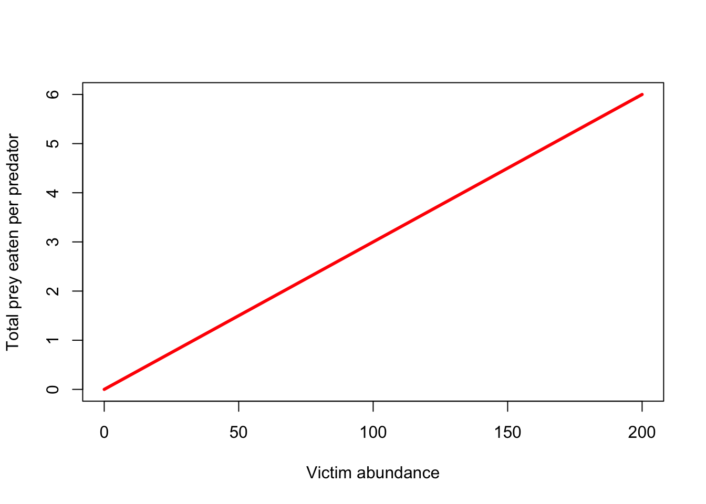
Tenga en cuenta la intersección: ¿la respuesta funcional debe tener una intersección de cero?
… ¡Por supuesto, este término alfa tiene un significado diferente del alfa en los modelos de competición L-V! ¡Lo siento!
Ahora considere el caso en el que hay más de un depredador, es decir, hay depredadores $P $ y presas $V $. Recuerde que cada depredador no influye en las tasas de consumo de otros depredadores. Los depredadores son como moléculas que chocan aleatoriamente con moléculas de presa.
The total rate of predation now is:
\(f(V) \cdot P = \alpha VP\)
¿Esto tiene sentido?
El término $ alpha $ también se conoce como eficiencia de captura . ¿Esto tiene sentido? Considere un caso en el que cada depredador “choca” con todas las presas en el paisaje en cada paso de tiempo, pero solo consume el 3% de esas presas. Ahora considere un depredador que consume el 50% de esas presas por paso de tiempo. ¿Qué depredador es más eficiente ?
P ¿Cuáles son las unidades de alfa ? [Edmodo]
Ahora, la tasa de crecimiento de la presa (instantánea) se puede definir mediante la siguiente ecuación:
\(\Delta V = rV - \alpha VP\)
En ausencia de depredadores, la población de presas crece exponencialmente. Sin embargo, con suficientes depredadores en el paisaje, la población disminuirá.
Este modelo es la mitad de lo que se conoce como el modelo presa-depredador ** Lotka-Volterra **.
¡La otra mitad es el modelo de crecimiento de la población de depredadores, por supuesto!
Los depredadores
En ausencia de presas, supongamos que la población de depredadores crece como podríamos imaginar que crece: ¡MALO!
\(\Delta P = -qP\)
En ausencia de presas, la población de depredadores disminuye exponencialmente.
Si hay suficientes presas, la tasa de crecimiento de la población de los depredadores aumentará …
Recuerde que (en este modelo simple) los depredadores y las presas caminan al azar a través de su entorno común, chocando entre sí al azar. Cada depredador consume un porcentaje fijo de la población de presas. Es decir, la respuesta funcional es:
\(f(V) = \alpha V\)
La respuesta numérica es el aumento en la tasa de crecimiento fraccional de depredadores por unidad de presa consumida. La respuesta numérica está relacionada con la respuesta funcional. Mientras que la respuesta funcional describe el consumo de presas por depredador, la respuesta numérica describe cómo ese consumo de presas se traduce en el crecimiento de la población de depredadores. \(g(V) = some.function(f(V))\)
La respuesta numérica más simple es que el crecimiento de la población de depredadores aumenta como una función lineal del consumo de presas per cápita:
\(g(V) = \gamma (\alpha \cdot V)\)
Donde $$ es la eficiencia de conversión y $ alpha $ es la eficiencia de captura y $ alphaV $ es la presa total consumida por depredador.
O, dicho de manera más simple:
\(g(V)=\beta \cdot V\)
P ¿cuál es la forma de la ** respuesta numérica ** en este caso?
######
# Numerical response
LVnumresp <- function(V,beta){
beta*V
}
curve(LVnumresp(x,0.001),0,200,xlab="Victim abundance",ylab="Increase in r for predator population",col="blue",lwd=3)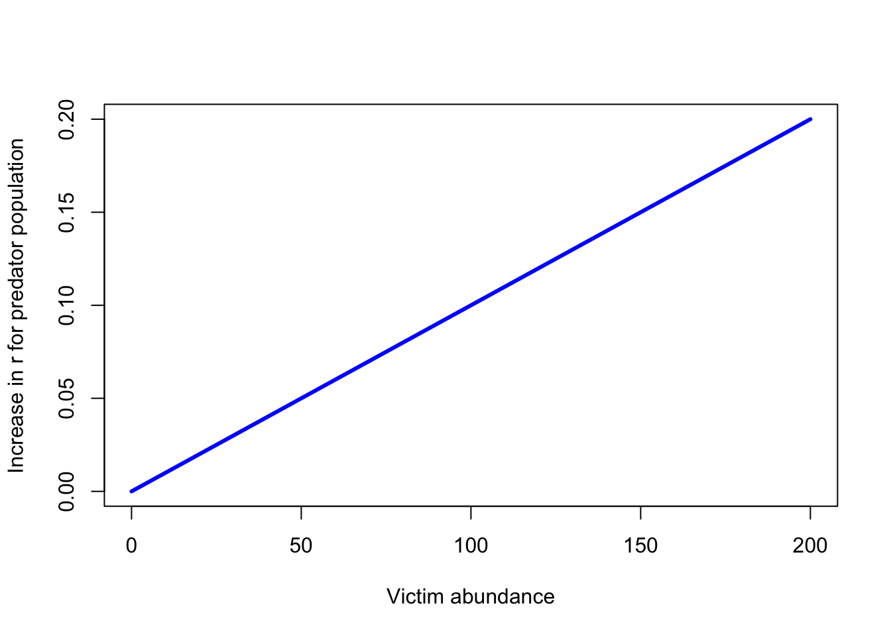
Tenga en cuenta la intersección: ¿la respuesta numérica debe tener una intersección de cero?
El aumento en el total de depredadores debido al consumo de presas ahora es:
\(g(V) \cdot P = \beta V \cdot P\)
¿Esto tiene sentido?
El término $ beta $ está relacionado con la eficiencia de conversión del depredador (cuán eficientemente el depredador convierte su alimento en la producción de nuevos depredadores). Considere un caso en el que cada depredador consume 100 presas por paso de tiempo ($ alpha V = 100 $), pero el crecimiento de la población de depredadores aumenta solo en 0.01 en relación con un escenario sin presas. Ahora considere un depredador que consume 1 presa por paso de tiempo, y el crecimiento aumenta en 0.1 … ¿Qué depredador es más eficiente para convertir la biomasa de presas en crecimiento de la población de depredadores (creando nuevos depredadores)?
** P ** ¿Cuáles son las unidades de * beta *?
Ahora, la tasa de crecimiento (instantánea) del DEPREDADOR se puede definir mediante la siguiente ecuación:
\(\Delta P = \beta VP - qP\)
Este modelo es la otra mitad de lo que se conoce como el modelo presa-depredador Lotka-Volterra .
Tomados en conjunto, el modelo se puede describir de la siguiente manera:
\(\Delta P = \beta VP - qP\)
\(\Delta V = rV - \alpha VP\)
L-V modelo de depredación en InsightMaker
Antes de profundizar en el modelo de depredación, simulemos el crecimiento de la población de presas y depredadores bajo el modelo de depredación L-V.
Step 1: Primero, clonar this Insight, que proporciona el esqueleto para un modelo básico de presa-depredador
Step 2: Configure correctamente las ecuaciones para las variables “respuesta funcional” “y” respuesta numérica “.
Step 3: Configure correctamente las ecuaciones de flujo para “presa total consumida” y “crecimiento de depredadores”, que se refieren a la presa perdida y los depredadores ganados por paso de tiempo, respectivamente.
Step 4: En el menú de configuración, cambie la duración de la simulación a 200 y asegúrese de que su algoritmo de análisis esté configurado en “Preciso (RK4)” (esto hace que InsightMaker se comporte más como un modelo de crecimiento continuo).
Step 5: Establezca la abundancia inicial de presas y depredadores en 100 y 50, respectivamente. Establezca los términos alfa y beta en 0,001 y establezca los términos r_prey y q_pred en 0,1. Ejecute el modelo y visualice la serie temporal de presas y depredadores.
Step 6: Agregue una nueva pantalla para representar el plano de fase: Elija el tipo de “diagrama de dispersión”, y en “Datos” seleccione Prey primero, luego Predator . ¿Cómo se ve este sistema en el plano de fase?
P ¿Qué sucede si cambia las abundancias iniciales?
P ¿Qué sucede si cambia la abundancia inicial de ambas especies a 100? ¿Es esto un equilibrio ? Si es así, ¿es estable ?
Step 7 : Pruebe otros valores de parámetros para alfa, beta, r y q …
P ¿Se extingue alguna vez la presa o el depredador?
P ¿Puede encontrar algunos ajustes que produzcan oscilaciones muy lentas?
P ¿Puede encontrar algunos ajustes que produzcan oscilaciones muy rápidas?
P ¿Puede encontrar algunos ajustes que produzcan oscilaciones muy superficiales?
¡Modelos Prey-depredator en el plano de fase!
Si desea seguir en R, haga clic en here para el script R!
##### LOTKA VOLTERRA PREDATION EXAMPLE (on phase plane)
## Params
Alpha <- 0.001
Beta <- 0.001
InitPrey <- 100
InitPred <- 75
r <- 0.1
q <- 0.1
Nyears <- 100
step <- 0.1
System <- data.frame(prey = rep(InitPrey,(Nyears+1)*10),pred = InitPred)
doYear <- function(prevyear){
n1 <- prevyear[1] + r*prevyear[1]*step - Alpha*prevyear[1]*prevyear[2]*step
n2 <- prevyear[2] + Beta*prevyear[1]*prevyear[2]*step - q*prevyear[2]*step
return(c(n1,n2))
}
## Do simulation
for(i in 1:(Nyears*10+1)){
System[1+i,] <- doYear(System[i,])
}Ahora visualicemos este sistema básico L-V en espacio de fase/Phase Plane:
plot(1,1,pch="",ylim=c(0,200),xlim=c(0,200),xlab="prey",ylab="predators")
points(System[seq(1,1000,10),],col="green",type="p",pch=20,cex=0.85)
points(System[1,],col="blue",pch=20,cex=3)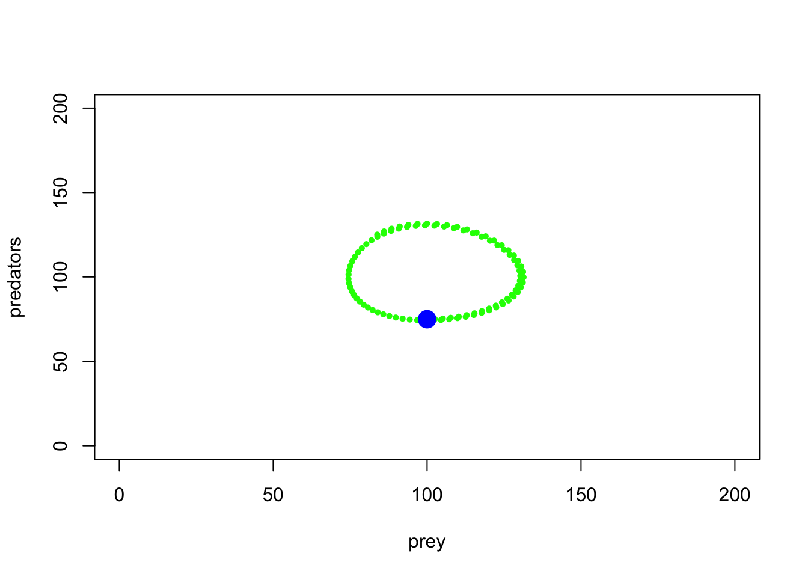
De acuerdo, a medida que las presas se vuelven más abundantes, los depredadores comienzan a aumentar, pero a medida que aumentan los depredadores, la abundancia de presas disminuye. ¡Y repetir!
Aquí hay otro ejemplo …
##### LOTKA VOLTERRA PREDATION EXAMPLE
## Params
Alpha <- 0.005
Beta <- 0.005
InitPrey <- 100
InitPred <- 75
r <- 0.2
q <- 0.1
Nyears <- 100
step <- 0.1
System <- data.frame(prey = rep(InitPrey,(Nyears+1)*10),pred = InitPred)
doYear <- function(prevyear){
n1 <- prevyear[1] + r*prevyear[1]*step - Alpha*prevyear[1]*prevyear[2]*step
n2 <- prevyear[2] + Beta*prevyear[1]*prevyear[2]*step - q*prevyear[2]*step
return(c(n1,n2))
}
## Do simulation
for(i in 1:(Nyears*10+1)){
System[1+i,] <- doYear(System[i,])
}
plot(1,1,pch="",ylim=c(0,200),xlim=c(0,200),xlab="prey",ylab="predators")
points(System[seq(1,1000,10),],col="green",type="p",pch=20,cex=0.85)
points(System[1,],col="blue",pch=20,cex=3)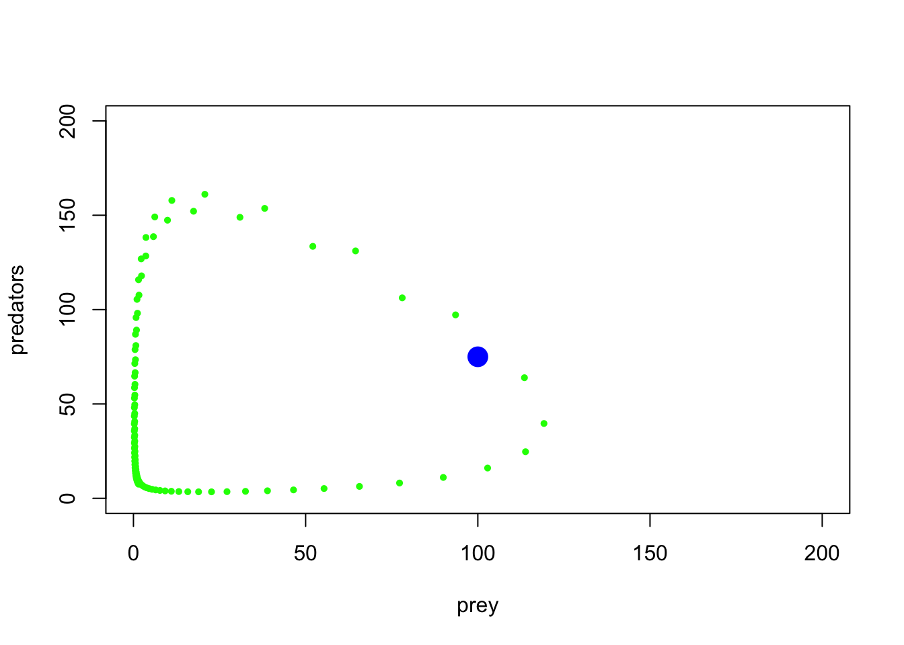
Con algo de jittering podemos visualizar la cantidad de tiempo que el sistema pasa en varias partes del espacio de fase …
plot(1,1,pch="",ylim=c(0,200),xlim=c(0,200),xlab="Prey",ylab="Predators")
points(jitter(System[,1],200),jitter(System[,2],200),col="brown",pch=20,cex=0.3)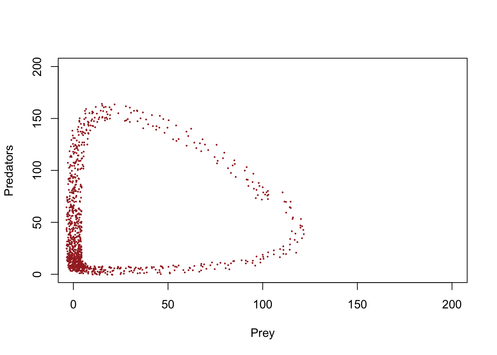
#abline(h=K2,v=K1,col="gray",lwd=2,lty=2)¡Puede ver que este sistema pasa mucho más tiempo cerca del origen, donde las abundancias son bajas tanto para las presas como para los depredadores!
Finalmente, consideremos múltiples puntos de partida y veamos cómo se comporta el sistema.
##### LOTKA VOLTERRA PREDATION EXAMPLE
## Params
InitN1 <- 120
InitN2 <- 25
System1 <- data.frame(n1 = rep(InitN1,(Nyears*10+1)),n2 = InitN2)
## Do simulation
for(i in 1:(Nyears*10+1)){
System1[1+i,] <- doYear(System1[i,])
}
InitN1 <- 200
InitN2 <- 100
System2 <- data.frame(n1 = rep(InitN1,(Nyears*10+1)),n2 = InitN2)
## Do simulation
for(i in 1:(Nyears*10+1)){
System2[1+i,] <- doYear(System2[i,])
}
InitN1 <- 50
InitN2 <- 200
System3 <- data.frame(n1 = rep(InitN1,(Nyears*10+1)),n2 = InitN2)
## Do simulation
for(i in 1:(Nyears*10+1)){
System3[1+i,] <- doYear(System3[i,])
}Ahora, el espacio de fase se ve así (con jittering para indicar la concentración de puntos:
plot(1,1,pch="",ylim=c(0,400),xlim=c(0,400),xlab="species 1",ylab="species 2")
points(jitter(System[,1],500),jitter(System[,2],500),col="brown",pch=20,cex=0.3)
points(jitter(System1[,1],500),jitter(System1[,2],500),col="green",pch=20,cex=0.3)
points(jitter(System2[,1],500),jitter(System2[,2],500),col="red",pch=20,cex=0.3)
points(jitter(System3[,1],500),jitter(System3[,2],500),col="blue",pch=20,cex=0.3)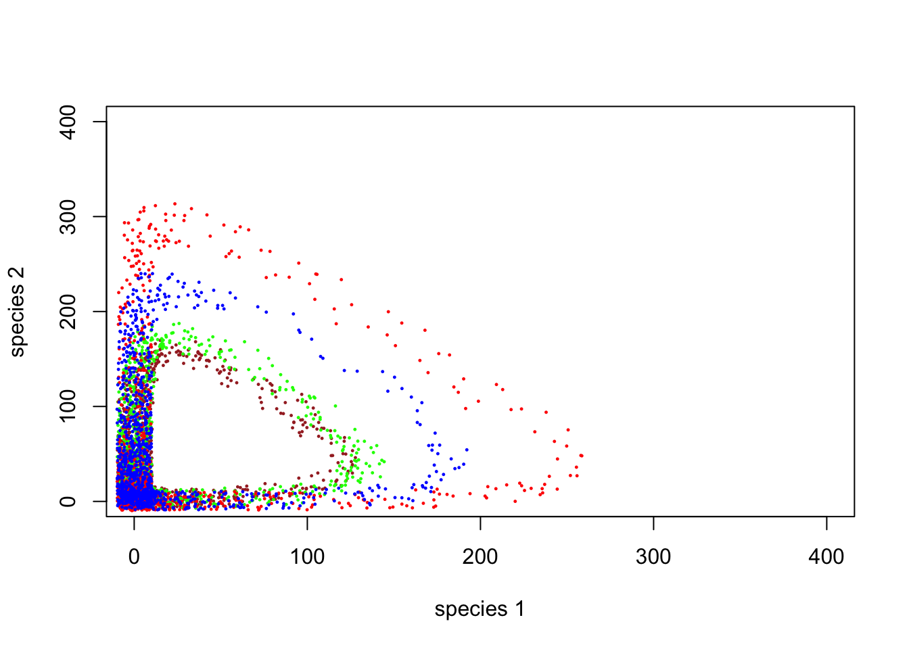
#abline(h=K2,v=K1,col="gray",lwd=2,lty=2)P : ¿Tiene este sistema depredador-presa un equilibrio estable?
P : ¿Este sistema depredador-presa tiene un equilibrio?
P : ¿Cómo se ven estas dinámicas cuando se visualizan como series de tiempo?
plot(seq(1,100,length=nrow(System)), System[,1], xlab="Time", ylab="Abundance",type="l",col="orange",lwd=2,ylim=c(0,160),xlim=c(0,95))
points(seq(1,100,length=nrow(System)), System[,2], xlab="Time", ylab="Abundance",type="l",col="green",lwd=2,lty=2)
legend("top",lwd=c(2,2),lty=c(1,2),col=c("orange","green"),legend=c("prey","predator"),bty="n")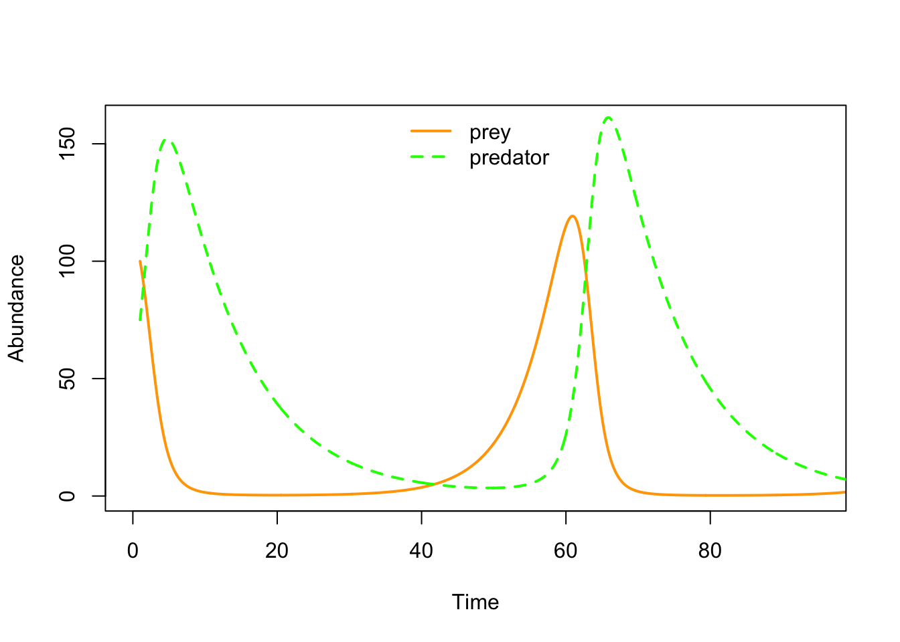
¡Más con el espacio de fase L-V depredador-presa!
Al igual que antes, dibujemos flechas a lo largo del espacio de fase, que representan a dónde se espera que vaya el sistema desde cada punto en el espacio de fase.
#######################################################################################
## SPECIFY MODEL AND INITIALIZE
#
## toggle switch function for phase arrow and nullcline plotting
toggle = compiler::cmpfun(function(u,v,parms) {
c( u*parms[1]-parms[2]*u*v, parms[3]*u*v-parms[4]*v )
})
fun=toggle ## Our generic name for the system of equations to look at! ;-)
#
## toggle switch function for computing solution trajectories with deSolve::ode()
#Toggle = as.ode.func(toggle)
#
## parameter values?
Alpha <- 0.005
Beta <- 0.005
r <- 0.2
q <- 0.1
parms=c(r,Alpha,Beta,q)
# toggle(100,100,parms)
xlim = c(5,200)
ylim = c(5,200)
new <- phasearrows.calc(toggle,xlim,ylim,resol=25,parms=parms)
plot(1,1,pch="",xlim=xlim,ylim=ylim,xlab="Prey",ylab="Predators")
phasearrows.draw(new)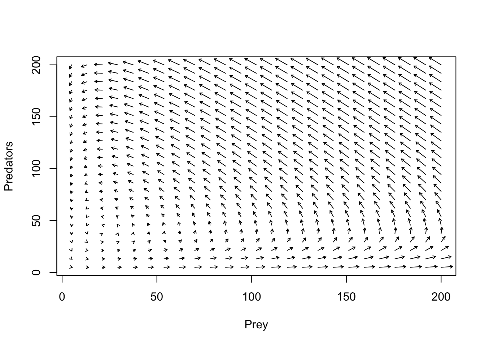
#
## END MODEL SPECIFICATION AND INITIALIZATION
#######################################################################################¿Hay otros posibles resultados de este modelo simple L-V?
¡Bien, entonces tracemos las isoclinas!
Isoclines!
Una vez más, puede ser útil trazar las isoclinas en el espacio de fase, es decir, las condiciones en las que las poblaciones de depredadores y presas NO crecen.
Si establecemos la ecuación de crecimiento de presas L-V en cero, encontramos que la población de víctimas es estable bajo las siguientes condiciones en el espacio de fase:
\(\hat{P} =\frac{r}{\alpha}\)
Si establecemos la ecuación del depredador L-V en cero, encontramos que la población de depredadores es estable en las siguientes condiciones en el espacio de fase:
\(\hat{V} =\frac{q}{\beta}\)
Es decir, la población de presas es estable solo si hay suficientes depredadores para chocar (y luego devorar) cualquier exceso de individuos producidos cada año.
Y la población de depredadores es estable solo si hay presas suficientes para compensar la mortalidad natural.
Visualicemos esto en el espacio de fase.
plot(1,1,pch="",xlim=xlim,ylim=ylim,xlab="Prey",ylab="Predators")
phasearrows.draw(new)
abline(h=r/Alpha,col="red",lwd=3) # prey
abline(v=q/Beta,col="blue",lwd=3) # pred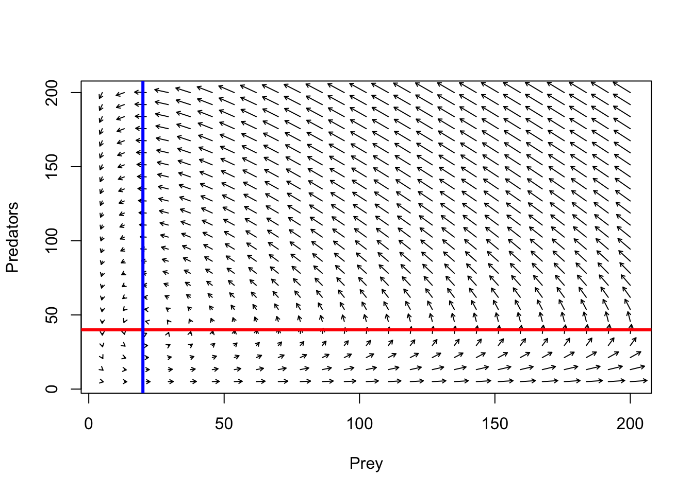
Supuestos del modelo L-V presa-depredador
- La población de víctimas está regulada solo por la depredación
- El depredador se alimenta solo de una especie de presa
- Los depredadores individuales pueden consumir presas infinitas por paso de tiempo teóricamente
- Sin interferencia entre depredadores
- Las víctimas no tienen refugio de los depredadores.
Modelos de presa-depredador más realistas
¡Veamos qué pasa si relajamos algunas de estas suposiciones!
- ¡Dale a la presa capacidad de carga!
- modificar la respuesta funcional!
- ¡Agrega un refugio para las presas!
- ¡Agregue una capacidad de carga de depredadores!
Podemos jugar con estos escenarios en InsightMaker. Pero puede ser instructivo visualizar primero en el espacio de fase. Por ejemplo, incorporemos una capacidad de carga para víctimas.
Víctima K en el espacio de fase
#######################################################################################
## SPECIFY MODEL AND INITIALIZE
#
## toggle switch function for phase arrow and nullcline plotting
toggle = compiler::cmpfun(function(u,v,parms) {
c( u*parms[1]-parms[2]*u*v - parms[3]*u^2, parms[4]*u*v-parms[5]*v )
})
fun=toggle ## Our generic name for the system of equations to look at! ;-)
#
## toggle switch function for computing solution trajectories with deSolve::ode()
#Toggle = as.ode.func(toggle)
#
## parameter values?
Alpha <- 0.001
Beta <- 0.005
r <- 0.2
q <- 0.1
c <- 0.008
parms=c(r,Alpha,c,Beta,q)
# toggle(100,100,parms)
xlim = c(5,200)
ylim = c(5,200)
new <- phasearrows.calc(toggle,xlim,ylim,resol=25,parms=parms)
plot(1,1,pch="",xlim=xlim,ylim=ylim,xlab="Prey",ylab="Predators")
phasearrows.draw(new)## Warning in arrows(c(x), c(y), c(x + dx * z1/((lens2) + 0.1)), c(y + dx * : zero-
## length arrow is of indeterminate angle and so skipped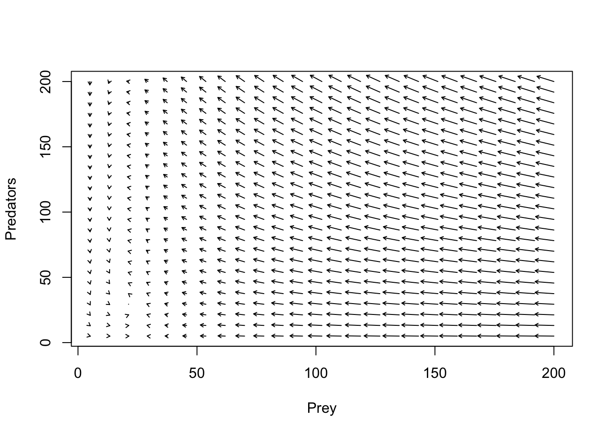
#
## END MODEL SPECIFICATION AND INITIALIZATION
#######################################################################################Añadiendo isoclinas, se parece a esto:
plot(1,1,pch="",xlim=xlim,ylim=ylim,xlab="Prey",ylab="Predators")
phasearrows.draw(new)## Warning in arrows(c(x), c(y), c(x + dx * z1/((lens2) + 0.1)), c(y + dx * : zero-
## length arrow is of indeterminate angle and so skippedabline((r/Alpha),-(c/Alpha),col="red",lwd=3) # prey
abline(v=q/Beta,col="blue",lwd=3) # pred
Follow the arrows. What do you think the system dynamics will look like?
## Params
Alpha <- 0.001
Beta <- 0.005
r <- 0.2
q <- 0.1
c <- 0.008
InitPrey <- 100
InitPred <- 75
Nyears <- 100
step <- 0.1
System <- data.frame(prey = rep(InitPrey,(Nyears+1)*10),pred = InitPred)
doYear <- function(prevyear){
n1 <- prevyear[1] + r*prevyear[1]*step - Alpha*prevyear[1]*prevyear[2]*step - c*prevyear[1]^2*step
n2 <- prevyear[2] + Beta*prevyear[1]*prevyear[2]*step - q*prevyear[2]*step
return(c(n1,n2))
}
## Do simulation
for(i in 1:(Nyears*10+1)){
System[1+i,] <- doYear(System[i,])
}
##### LOTKA VOLTERRA PREDATION EXAMPLE
## Params
InitN1 <- 100
InitN2 <- 200
System1 <- data.frame(n1 = rep(InitN1,(Nyears*10+1)),n2 = InitN2)
## Do simulation
for(i in 1:(Nyears*10+1)){
System1[1+i,] <- doYear(System1[i,])
}
InitN1 <- 100
InitN2 <- 100
System2 <- data.frame(n1 = rep(InitN1,(Nyears*10+1)),n2 = InitN2)
## Do simulation
for(i in 1:(Nyears*10+1)){
System2[1+i,] <- doYear(System2[i,])
}
InitN1 <- 50
InitN2 <- 20
System3 <- data.frame(n1 = rep(InitN1,(Nyears*10+1)),n2 = InitN2)
## Do simulation
for(i in 1:(Nyears*10+1)){
System3[1+i,] <- doYear(System3[i,])
}
plot(1,1,pch="",xlim=xlim,ylim=ylim,xlab="Prey",ylab="Predators")
phasearrows.draw(new)## Warning in arrows(c(x), c(y), c(x + dx * z1/((lens2) + 0.1)), c(y + dx * : zero-
## length arrow is of indeterminate angle and so skippedabline((r/Alpha),-(c/Alpha),col="red",lwd=3) # prey
abline(v=q/Beta,col="blue",lwd=3) # pred
points(jitter(System[,1],500),jitter(System[,2],500),col="brown",pch=20,cex=0.3)
points(jitter(System1[,1],500),jitter(System1[,2],500),col="green",pch=20,cex=0.3)
points(jitter(System2[,1],500),jitter(System2[,2],500),col="red",pch=20,cex=0.3)
points(jitter(System3[,1],500),jitter(System3[,2],500),col="blue",pch=20,cex=0.3)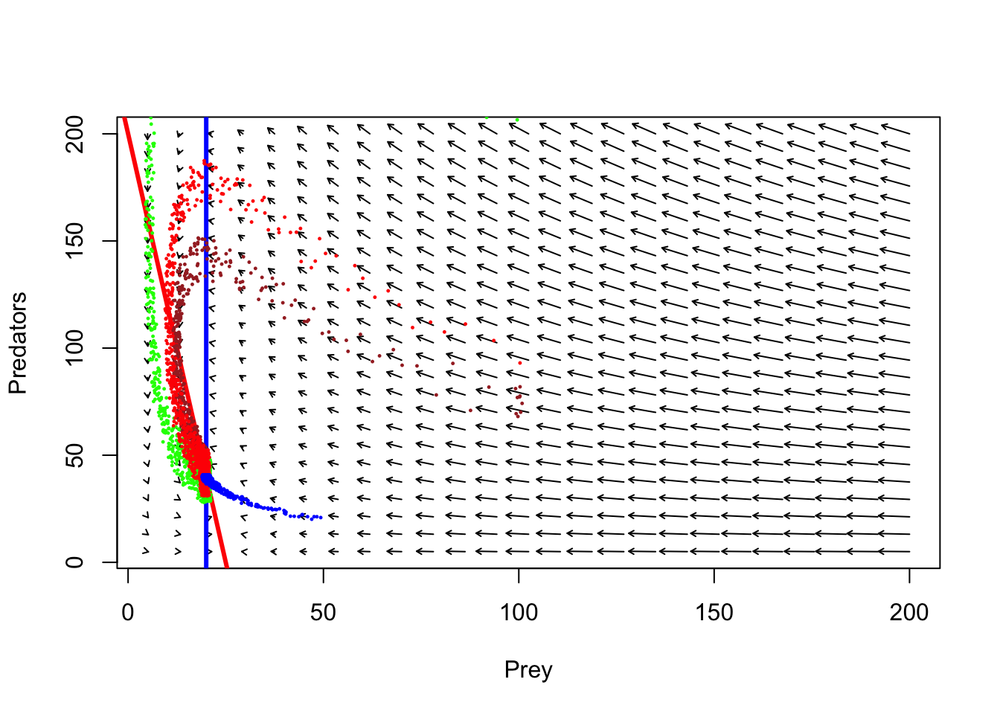
Ahora, ¿el sistema tiene un equilibrio estable ???
¡Visualicemos como una serie de tiempo!
plot(seq(1,100,length=nrow(System)), System[,1], xlab="Time", ylab="Abundance",type="l",col="orange",lwd=2,ylim=c(0,160),xlim=c(0,95))
points(seq(1,100,length=nrow(System)), System[,2], xlab="Time", ylab="Abundance",type="l",col="green",lwd=2,lty=2)
legend("top",lwd=c(2,2),lty=c(1,2),col=c("orange","green"),legend=c("prey","predator"),bty="n")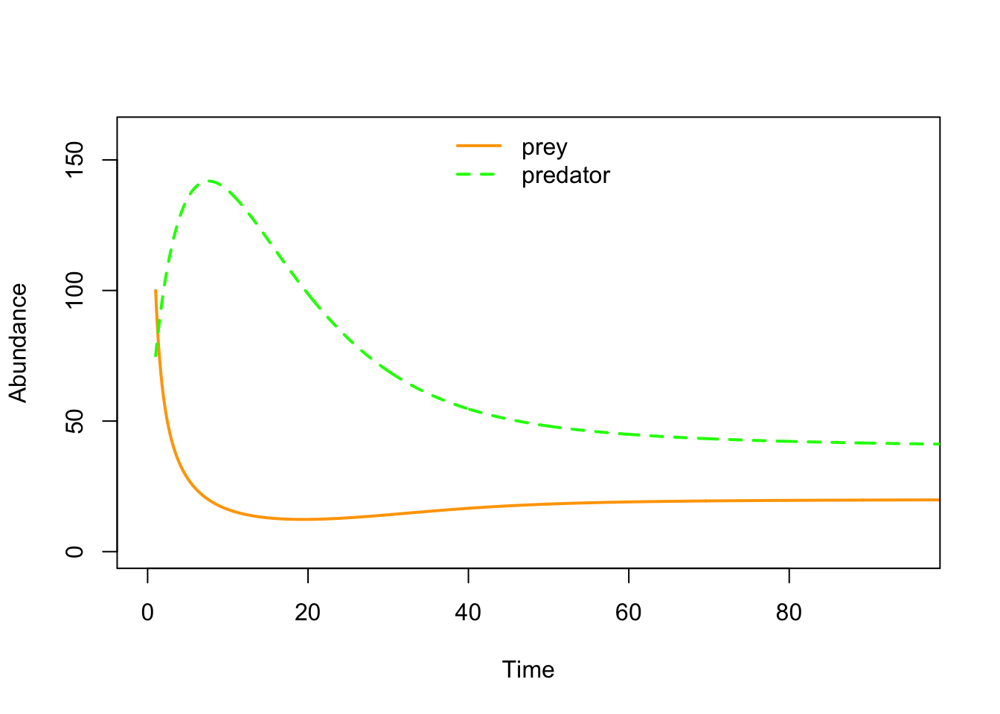
Respuestas funcionales alternativas
El modelo L-V presa-depredador asume que el consumo de presas por depredador aumenta linealmente con un aumento en la abundancia de presas. Siguiendo a C.S. “Buzz” Holling, esto se conoce como una respuesta funcional “Tipo I” .
La respuesta funcional de Tipo I hace varias suposiciones poco realistas, por ejemplo, ¡que los depredadores nunca se llenan y dejan de comer!
Como hemos visto antes, ¡la respuesta funcional de tipo I se parece a esto!
\(f(V)=\alpha \cdot V\)
TypeIfuncresp <- function(V,alpha){
alpha*V
}
curve(TypeIfuncresp(x,0.1),0,500,xlab="Victim abundance",ylab="Total prey eaten per predator",col="red",lwd=3)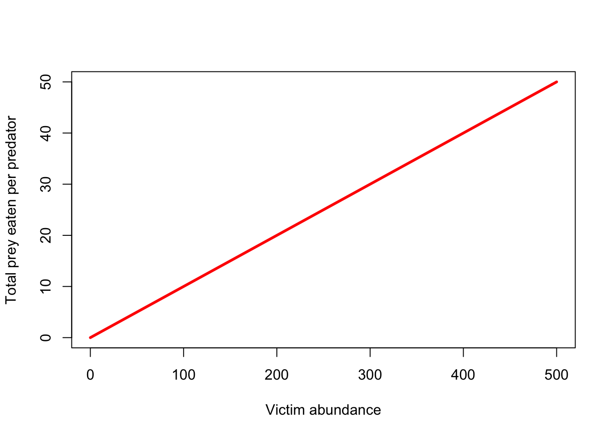
Type II functional response
La respuesta funcional Tipo II toma en cuenta la saturación de presas: los depredadores consumirán más presas con densidades de presas crecientes, ¡pero solo hasta cierto punto!
La respuesta funcional de tipo II se describe matemáticamente como:
\(f(V,P) = \frac{\alpha V}{1+\alpha hV}\),
donde * f (V, P) * es la respuesta funcional (presa consumida por depredador).
Similar a la respuesta funcional de Tipo I, $ alpha $ es la “tasa de ataque” (tasa a la que los encuentros depredador-presa aumentan a medida que aumentan las densidades de presas)
El nuevo término, h , describe el tiempo de manipulación (tiempo promedio que un depredador pasa procesando una sola presa).
¡El término h probablemente se entiende mejor como inverso de la tasa máxima de consumo de presas !
¡Visualicémoslo!
TypeIIfuncresp <- function(V,alpha,h){
(alpha*V)/(1+alpha*h*V)
}
curve(TypeIIfuncresp(x,0.1,0.1),0,500,xlab="Victim abundance",ylab="Total prey eaten per predator",col="red",lwd=3)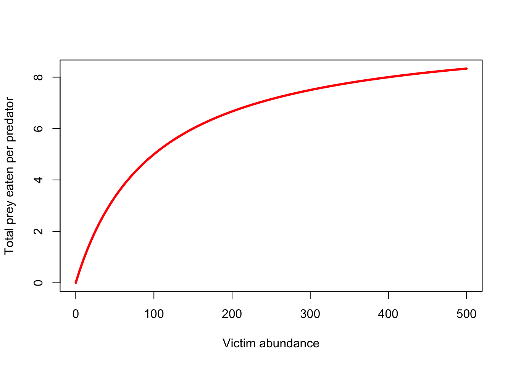
Type III functional response
La respuesta funcional Tipo III toma en cuenta el aprendizaje de los depredadores: a medida que las presas se vuelven más abundantes (en relación con otras presas potenciales), los depredadores desarrollarán una * imagen de búsqueda * y la eficiencia de captura aumentará con el aumento de la abundancia de presas hasta un cierto punto.
Por el contrario, a medida que la densidad de presas sea realmente baja, los depredadores dejarán de molestarse en buscar a la presa, por lo que la eficiencia de captura disminuirá.
La respuesta funcional de tipo III se puede describir matemáticamente como:
\(f(V,P) = \frac{\alpha V}{1+\alpha hV}\),
donde * f (V, P) * es la respuesta funcional (presa consumida por depredador).
Similar a la respuesta funcional de Tipo I, $ alpha $ es la “tasa de ataque” (la tasa a la que un depredador-presa se encuentra aumenta a medida que aumenta la densidad de presas)
El nuevo término, * h *, describe el tiempo de manipulación (tiempo promedio que un depredador pasa procesando una sola presa).
¡El término h * probablemente se entiende mejor como inverso de la tasa máxima de consumo de presas !
¡Visualicémoslo!
TypeIIIfuncresp <- function(V,alpha,h,k){
(alpha*V^k)/(1+alpha*h*V^k)
}
curve(TypeIIIfuncresp(x,0.0005,0.1,1.6),0,1000,xlab="Victim abundance",ylab="Total prey eaten per predator",col="red",lwd=3)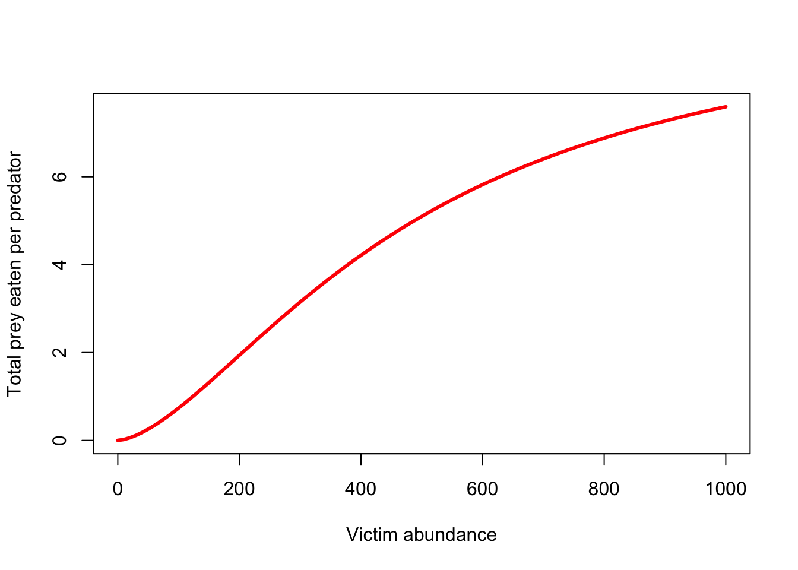
Final InsightMaker activity (on your own)!!
Paso 1 Agregue la dependencia de la densidad de presas a su modelo básico de depredador-presa, utilizando su conocimiento de modelado de la dependencia de la densidad (o simplemente use las ecuaciones del capítulo 6 del libro de Gotelli). Visualice la dinámica como series de tiempo y en espacio de fase. ¿Alguna vez ha visto oscilaciones con dependencia de la densidad de presas? ¿Es este modelo más estable que el modelo base L-V?
Paso 2 Cambie la respuesta funcional a una respuesta funcional de tipo II. Visualice la dinámica como series de tiempo y en espacio de fase. ¿Alguna vez ha visto oscilaciones con este modelo? ¿Es este modelo más estable que el modelo base L-V?
Paso 3 Cambie el modelo para tener en cuenta los refugios de presas. Es decir, hay un segmento de la población de presas que no es accesible para los depredadores. ¿Cómo cambia esto la dinámica del sistema?
Paso 4 Cambiar el modelo para incluir una respuesta funcional de tipo II Y dependencia de la densidad de presas. ¿Cómo cambia esto la dinámica del sistema? ¿Es este sistema estable? ¿Bajo que condiciones?
Paso 5 Evalúe la siguiente declaración (del Libro de Gotelli):
“Cuanto más independientes sean el depredador y la presa, más estable será la interacción”